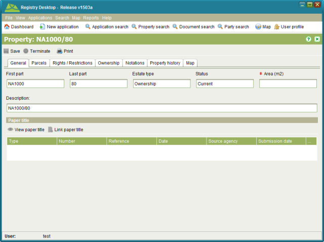
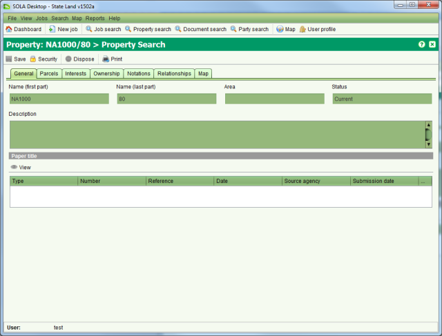
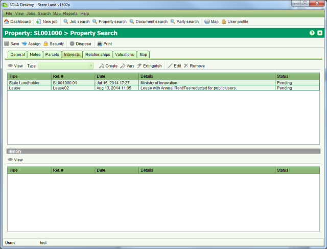

The Property Details screen allows you to view or edit state land property details as well
as view recorded property details. You can access the Property Details screen in view only
mode by opening a search result from the Property Search screen. To edit property details,
you must first lodge a job that contains a Property or Interest task such as Record New
Property, Maintain Property or Change Interest, etc. and Start the task from the Job Details Task tab. The
Property and Interest How To sections discusses how to process various tasks using the
Property Details screen.
Start the task from the Job Details Task tab. The
Property and Interest How To sections discusses how to process various tasks using the
Property Details screen.

Property Details, State Land General tab

Property Details, Recorded Property General tab
A property links the interests over a parcel to the parties that hold those interests. Details that can be captured for a property include
|
General information about the property including the property reference (this is in two parts for recorded property), area, property manager, state land status (state land property only), description and any documents relevant to the property. |
|
Shown for state land property only. Comments or feedback recorded by the state land agency in relation to the property. Notes can also be flagged as actionable to indicate the agency must undertake some activity as a result of the note (e.g. property inspection, etc.) |
|
The area(s) of land that define the extent of a property. Parcels can be spatially defined and/or textually described by way of a metes and bounds description. |
|
The rights, restrictions or responsibilities (a.k.a. RRR) the right holder(s) are accorded in relation to the parcels represented by the property. These could be ownership rights, lease rights, mining rights, access rights, servitudes, building restrictions, land use restrictions, caveats, etc. This tab shows summary information of the current rights and restrictions for the property along with any pending (i.e. unregistered) rights or restrictions. |
|
Shows the list of parent properties (if any) that this property has been derived from
(a.k.a. the underlying titles). Where this property is an underlying title or the
property has been superseded by a new property, a child relationship is displayed. To
view the details of a parent or child property, select the property and click |
|
Shown for state land property only. Lists all valuations that have been captured for this state land property. |
|
Provides the SOLA Map Viewer highlighting the parcel for the property if one exists. This can help to identify the location of the property. |
|
Shown for recorded property only. Typically the primary right for a recorded property is the right of ownership. Properties can have one or many owners each with a share in the property that may be explicitly defined (tenants in common) or undivided (joint tenants). |
|
Shown for recorded property only. Short comments recorded when changes are made to the property that provides a succinct history of the changes. A.k.a. Memorials |
The Interests tab shows summary information for all current and pending interests on the
property. You can access further information about a specific interest by selecting it from
the list and clicking the  View toolbar button.
The screen displayed will be dependent on the type of interest you select, however it will
contain detailed information about the interest as well as any supporting documentation that
was linked to the interest when it was first recorded.
View toolbar button.
The screen displayed will be dependent on the type of interest you select, however it will
contain detailed information about the interest as well as any supporting documentation that
was linked to the interest when it was first recorded.

Interests tab
This tab also displays the interest history for the property in the bottom section of the
tab. You can select and  View the historic
interest details as required.
View the historic
interest details as required.
The other toolbar items available on this tab allow you to create, vary (modify) or
extinguish (cancel) interests. To use these toolbar items you must first lodge a job with one
or more Property or Interest tasks. When you  Start a Property or Interest task from the Job Details Tasks tab, it configures the
Property Details screen enabling or disabling the Interest toolbar items relevant for that
task.
Start a Property or Interest task from the Job Details Tasks tab, it configures the
Property Details screen enabling or disabling the Interest toolbar items relevant for that
task.